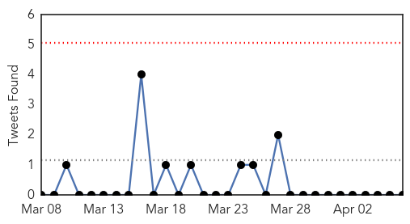
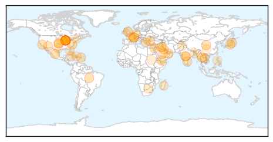

30 Day Trends
Web: 0 alerts, 0 warnings
Twitter: 0 alerts, 0 warnings
Top Articles:
- 0.972
- How Do I Know If My Dog Has It?
- 0.931
- Emerging form of poliovirus threatens hopes for eradication
- 0.929
- What You Need to Know About Salmonella
- 0.917
- Chicago Tribune
- 0.917
- Chicago Tribune
- 0.917
- Chicago Tribune
- 0.917
- Chicago Tribune
- 0.917
- Chicago Tribune
- 0.917
- Chicago Tribune
- 0.917
- Chicago Tribune
- 0.917
- Chicago Tribune
- 0.917
- Chicago Tribune
- 0.917
- Chicago Tribune
- 0.917
- Chicago Tribune
- 0.917
- Chicago Tribune
- 0.917
- Chicago Tribune
- 0.917
- Chicago Tribune
- 0.917
- Chicago Tribune
- 0.917
- Chicago Tribune
- 0.910
- The world windows to Thailand
- 0.905
- Imported drug-resistant stomach bug spreading in US
- 0.904
- Imported drug-resistant stomach bug spreading in U.S.
- 0.848
- CDC: Drug-Resistant Infections On Rise In U.S.
- 0.837
- Partners Unite to Battle Brain Fever
- 0.837
- Partners Unite to Battle Brain Fever
- 0.822
- Drug-resistant stomach bug from India spreads in the US
- 0.820
- Fleas in Arizona test positive for the PLAGUE after disease affects prairie dog population
- 0.800
- WHO awards Indians for public health Vatican Radio
- 0.797
- Dog owners warned about surge in canine flu cases
- 0.760
- Doctor urges public to use free screening
- 0.759
- King County Public Health - Covington-Maple Valley Reporter
- 0.756
- Mondial de rugby: les All Blacks dithyrambiques sur les Bleus
- 0.735
- Unsafe foods cause over 200 illnesses – PAHO
- 0.696
- Ban on import of catfish imposed
- 0.696
- Antibiotics could be used to safely treat infections in babies outside of hospitals
- 0.693
- More TB cases at Charlotte Central School
- 0.672
- Fleas collected near popular hiking trail test positive for plag - KATC.com
- 0.650
- Overcrowding: Officials fear spread of HIV at central jail
- 0.641
- UK warns of deadly bugs
- 0.633
- Unsafe food is ‘growing global threat’
- 0.626
- Hollande visits French WWII Jewish orphanage raided by Nazis
- 0.614
- International Medical Corps Delivering Critical Emergency Relief in Yemen Following Escalation in Violence - Yemen
- 0.611
- TB healthcare workers
- 0.607
- Paris subway lifts ban on 'Christian' ad
- 0.595
- Yemen on "verge of crisis" warn UN and aid groups
- 0.594
- International Medical Corps Delivering Critical Emergency Relief in Yemen Following Escalation in Violence
- 0.592
- The war against PEDv
- 0.591
- ALERT : Mysterious outbreak at 1st plain of Petit-Goâve
- 0.588
- Drug Resistant Stomach Bug Has Doctors Puzzled
- 0.581
- Putin’s popularity peaks a year into Ukraine conflict
Showing top 50 articles...
Top Tweets:
- 0.736
- ¿Aquí en Cayey habrá un casino?
- 0.518
- Farmer suspected H5N6 bird flu case after outbreak in geese http://t.co/j5fBQWaaun
Web/News Articles

Tweets
Article Locations
Article Confidences